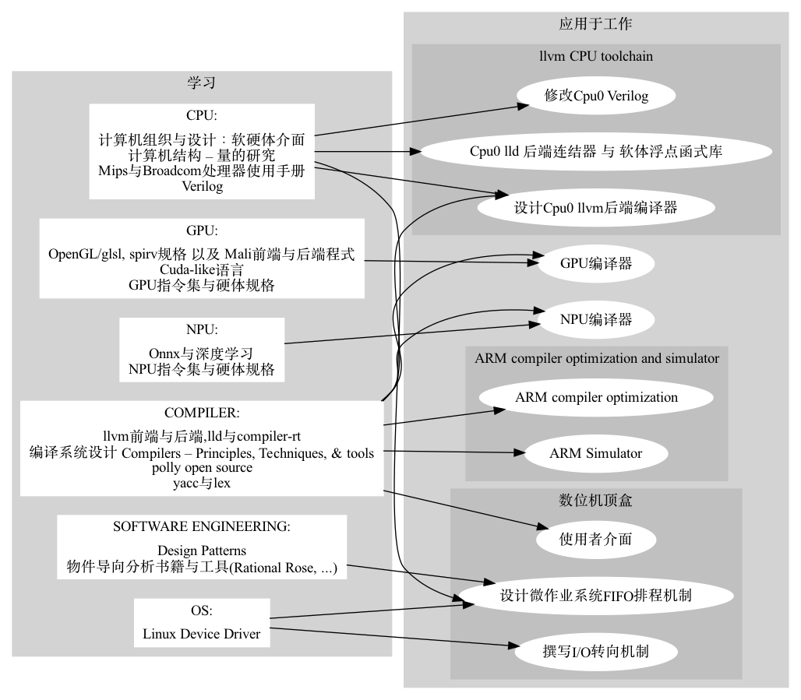

资格
二十年c/c++软体开发经验，九年编译器相关工具开发经验，硕士时研究平行处理。

陈钟枢
我是位有经验的compiler开发者，开发过llvm cpu and gpu backend, lld linker, npu/onnx, c++, OpenGl/glsl compiler与simulator，...， 对写compiler感到快乐。
二十年c/c++软体开发经验，九年编译器相关工具开发经验，硕士时研究平行处理。
很高兴我的作品已被LLVM接受，出现在 http://llvm.org/docs/tutorial/#external-tutorials
如何建立LLVM后端编译器  http://jonathan2251.github.io/lbd/index.html
http://jonathan2251.github.io/lbd/index.html
如何建立LLVM后端系统工具  http://jonathan2251.github.io/lbt/index.html
http://jonathan2251.github.io/lbt/index.html
1997-1999 硕士班，六月 1999，国立台湾师范大学，台北，主修：资讯科学。
1991-1994 学士班，六月 1994，国立台湾科技大学，台北，主修：工业工程。
1995年 国家高考（公职专业技师）资讯技师及格。
修影像处理课程与撰写:Jpeg decoder代码
Graphivz: 如此详细履历里的一些图学的图。原始码： mywork_1.gv and study_and_apply_ch2.gv
Gpu tensor指令与usharpid处理。
Gpu编译器优化与bug fix。
我们的Cude-like语言async{...}平行处理解法白皮书。
改写我们的NPU编译器上两层的IR中间码转换代码以提供共同的hardware independent图形数据结构, 以利多种NPU的支持。
支持加密格式的ONNX与config档输入。
确认如何支持MLIR。
GPU编译器范围:

为支援自行设计的手机GPU, 移植ARM的code。20%前端需修改, 50%后端需修改(以行数计算)。
我的工作:
独立完成80% texture相关的API, 80 APIs totally here , (frontend + llvm backend)与document撰写。
指导别的工程师完成其余20% texture相关的API, 核对并与texture的架构leader一起合作。
完成Prefetch-Sample optiomization, 让driver在载入glsl bin与执行sampling指令前就可驱动2D sampling指令。
独立完成GPU对vulkan load/store RGBA 固定浮点格式(32, 16, 11, 10 and 2 bits; NaN Infinity)支援的指令生成与document撰写。
设计半自动的软体系统，自动执行用gcc编译器编译benchmark程式，并产生excel比较图表。
为提升Marvell公司gcc与llvm编译器软体工具效能，介绍Polly软体系统。 Polly是针对loop最佳化的开放原始码专案。

提出与实作DSL领域语言解决方案应用在ARM 64位元Csim上。
用cmake替代make于Csim上。
优点: 比make简洁与跨平台。
下半部是llvm的流程图。黄色与绿色分别是我书中（如上，我的开法原始码专案）。

开发数位机顶盒
